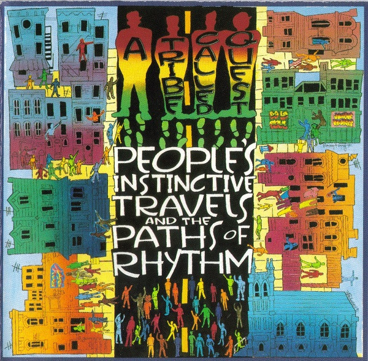

CD
People's Instinctive Travels And The Paths Of Rhythm
A Tribe Called Quest
Media: VG+ · Sleeve: NM
CA$8.96
Sold
Discogs SuggestedCA$16.39
Discogs MedianCA$16.39
Discogs HighCA$16.39
- Physical Copy ID
- BB-CD-3054
- Year
- 1990
- Label
- Jive, BMG, RCA
- Catalog #
- 1331-2-J, 1331-2-J, 1331-2-J
- Country
- USUS
- Genre / Style
- Hip Hop